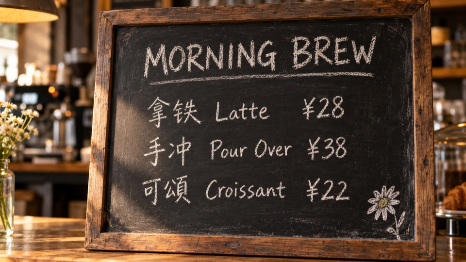
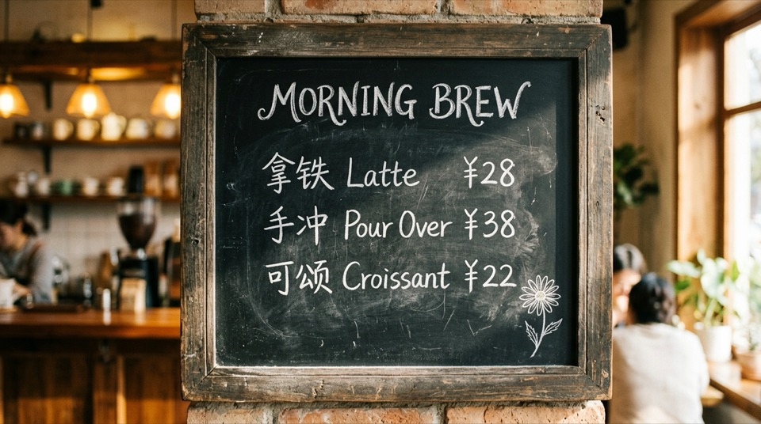
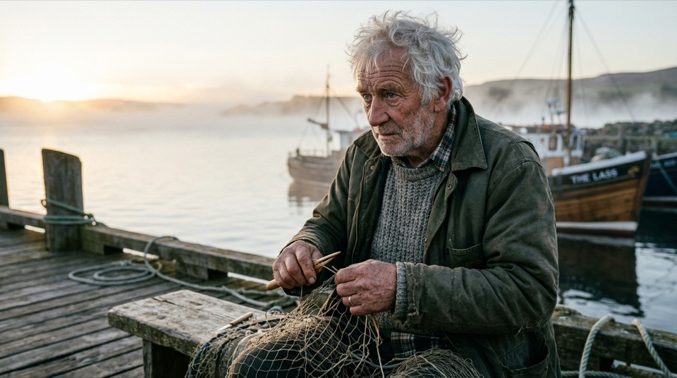
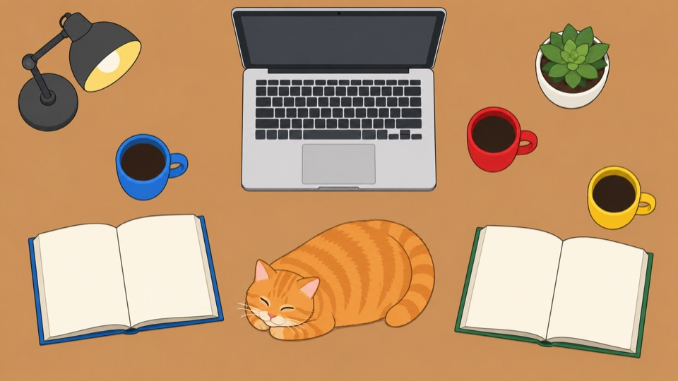
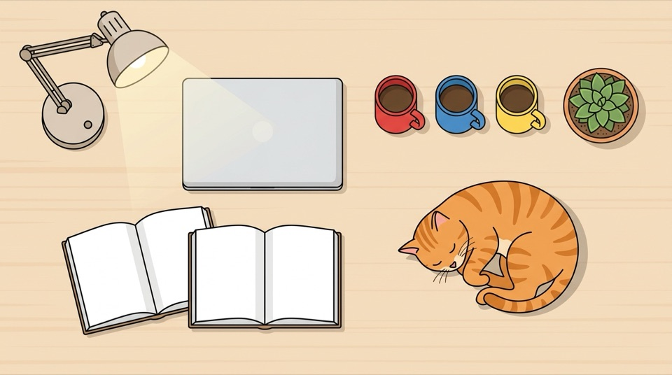

GPT · gpt-6.1-sol（Codex）

同一份提示词原样分别发给 Codex（gpt-6.1-sol）和 agy（gemini-3.8-flash-medium），经 model-bridge 并行出图（2026-10-07）。每格只跑了一次（n=1），差异里有随机成分，只作参考；图为缩到 960px 的 JPEG，原件 GPT 为 PNG、Gemini 为 JPEG。
一张复古咖啡馆木质黑板菜单的特写摄影：粉笔手写字，顶部标题是 MORNING BREW，下面三行菜单依次是“拿铁 Latte ¥28”“手冲 Pour Over ¥38”“可颂 Croissant ¥22”，右下角有一朵粉笔画的小雏菊。真实摄影，浅景深，暖色侧光，16:9 横幅。除上述文字外不要出现其他文字。


GPT：标题、三行菜单、价格、右下雏菊都对，只有第三行「可颂」被写成了繁体「頌」（放大核对）；字形有粉笔质感。
Gemini：标题、中英文、价格、雏菊全部正确，「颂」是简体；背景多了几个人物。
▸ 本题 Gemini 略优
一位白发老渔夫清晨坐在码头上修补渔网的写实人像摄影：脸部皱纹与胡茬清晰可见，粗布外套的纤维质感，背景海面有薄雾，柔和侧逆光，85mm 镜头浅景深，16:9 横幅，无文字。

GPT：皱纹、胡茬、粗布纤维、逆光边缘光和浅景深最到位，视线落在渔网上，无文字；色调偏浓。
Gemini：更自然的电影感，但船身出现「THE LASS」字样，违反「无文字」；渔网稀疏，人物看向画外，外套更像防水夹克而不是粗布。
▸ 本题 GPT 更贴题
书桌俯拍的扁平插画：桌面上恰好有 3 只不同颜色的马克杯（红色、蓝色、黄色各一只）、2 本摊开的书、1 台银色笔记本电脑、1 盆绿色多肉植物、1 只趴着的橘猫；左上角有一盏亮着的台灯；所有物体互不重叠，数量必须准确，16:9 横幅，无文字。


GPT：一次全对——3 只杯（红蓝黄）、2 本书、1 台笔记本、1 盆多肉、1 只猫、左上台灯，互不重叠。
Gemini：第一张（左）两本书重叠，违反要求；它自己发现后重新生成了第二张（右），第二张全对（笔记本合着）。共产出 2 张，需要调用方挑最终稿。
▸ GPT 一次过；Gemini 要自我修正
保留构图与主体（石阶、钟楼、枫树与石灯笼的位置不变），改为大雪纷飞的冬日清晨：石阶和屋顶覆盖积雪，红叶换成挂雪的枯枝与少量残红，光线冷白柔和，其余不变。
参考图：
GPT：大雪纷飞、积雪厚、残红保留，雪景效果最强；构图有放大和视角变化，但石阶、钟楼、枫树、石灯笼都在。
Gemini：构图更贴近原图，但积雪偏薄、飘雪不明显，左下角多出「Ruriko-in」字样。
▸ 雪景效果 GPT 强；构图保持 Gemini 好